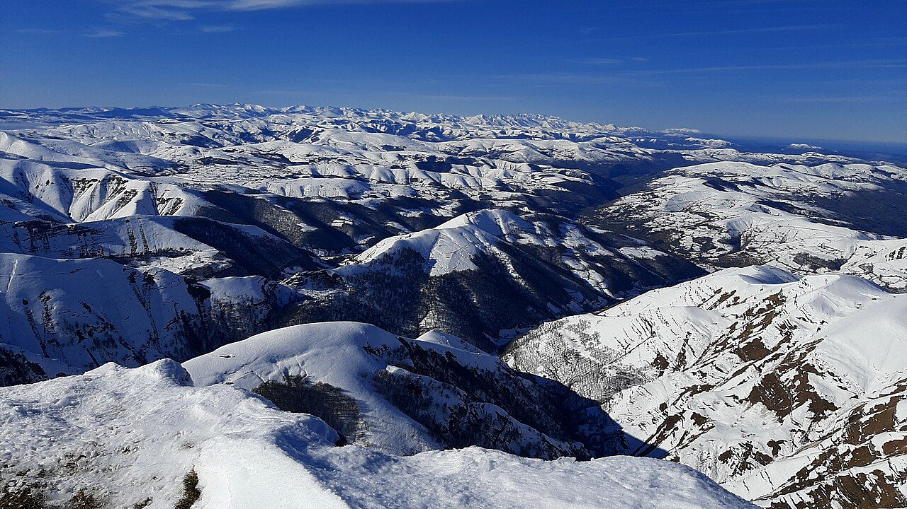
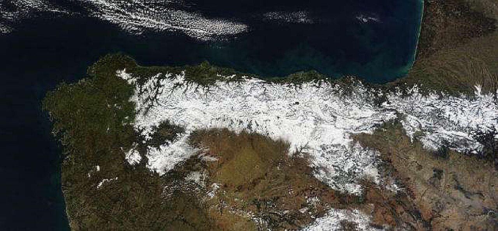

La Cordillera Cantábrica
Criterios: PN 1.1, PN 1.3
🤔 Pienso5 min
Qué hago aquí: Piensa un momento y contesta con lo que ya sabes. No pasa nada si no lo sabes: es para empezar.
Desde muchos sitios de Cantabria se ven montañas al sur. ¿Cuál ves tú desde tu casa o desde el colegio? ¿Sabes cómo se llama?
📖 Leo y aprendo15 min
Qué hago aquí: Lee despacio, mira los dibujos y los ejemplos, y quédate con la idea clave del final.
La Cordillera Cantábrica es una cadena de montañas que recorre el norte de España, de este a oeste, a lo largo de unos 480 km: desde los Pirineos hasta Galicia. En Cantabria forma una barrera al sur, paralela a la costa y muy cerca de ella.

Foto: Teofrasto820 · CC BY-SA 4.0 · Cordillera Cantábrica vista desde el Castro Valnera.jpg
La cordillera es una divisoria de aguas: los ríos del norte van al Cantábrico y los del sur, al Mediterráneo (Ebro) o al Atlántico (Duero). También frena las nubes que vienen del mar: por eso llueve tanto en la vertiente norte.

Foto: Teofrasto820 · CC BY-SA 4.0 · Cordillera Cantábrica nevada en febrero de 2015. Fotografía de satélite.jpg
✏️ Hago25 min
Qué hago aquí: Haz las actividades en orden. Empieza siempre por las básicas.
Ordena los pasos de la formación de la Cordillera Cantábrica. Después explica cada paso con una de estas palabras: sedimento, caliza, placas, erosión.
Pon el número de orden a cada uno (1 es el primero).
Un excursionista encuentra una concha fósil a 1500 m de altura. Su amigo dice que «la subió un pájaro». Refútalo con lo que has aprendido sobre el origen de la cordillera.
Explica qué es una divisoria de aguas y pon un ejemplo con tres ríos que nazcan cerca de Reinosa y acaben en mares distintos. ¿A qué mar va cada uno?
La cordillera actúa como una barrera. Explica dos consecuencias: una para el clima y otra para las comunicaciones entre Cantabria y la meseta.
Busca en un mapa tres puertos de montaña que crucen la cordillera desde Cantabria y anota su altitud. ¿Por qué las carreteras y el tren siguen los valles para llegar a ellos en lugar de subir en línea recta?
Compara la vertiente norte y la vertiente sur de la cordillera: pendiente, longitud de los ríos, lluvia y vegetación. Organízalo en una tabla.
El agua de lluvia disuelve la caliza. Explica qué es el karst y por qué en una zona kárstica los ríos pueden desaparecer bajo tierra. ¿Qué riesgo tiene contaminar el suelo en una zona así?
🚀 Amplío (si quieres saber más)
Qué hago aquí: ¿Has terminado? Lee la curiosidad o elige el reto. Es voluntario.
Experimento: pon un trozo de tiza en un vaso con vinagre y otro en un vaso con agua. Observa durante diez minutos y anota lo que pasa en cada uno. Explica la diferencia, relaciónala con la formación de las cuevas y calcula cuánto tardaría en formarse una galería si el agua disolviera 1 mm de roca al año.
✅ Compruebo5 min
Qué hago aquí: Contesta sin mirar la ficha y marca cómo lo llevas.